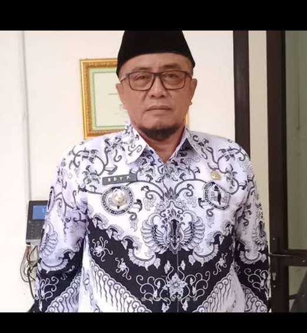

Profil Kecamatan

Edy Purbowo, S.Sos.
| Jabatan | : | Camat Kecamatan X |
| Periode Jabatan | : | 2025 – Sekarang |
| Kantor | : | Kantor Kecamatan Karanglewas |
Tentang Kecamatan
Kecamatan Karanglewas merupakan salah satu kecamatan yang berada di Kabupaten Banyumas, Provinsi Jawa Tengah. Wilayah ini terdiri dari beberapa desa dengan kondisi geografis yang didominasi oleh kawasan permukiman dan pertanian.
Masyarakat Kecamatan Karanglewas sebagian besar bermata pencaharian di sektor pertanian, perdagangan, dan jasa. Aktivitas sosial dan ekonomi masyarakat didukung oleh berbagai fasilitas umum seperti pendidikan, kesehatan, dan sarana ibadah yang tersebar di wilayah kecamatan.
Dalam perkembangannya, Kecamatan Karanglewas terus berupaya meningkatkan kualitas kehidupan masyarakat melalui pengelolaan wilayah dan pelayanan publik yang berkelanjutan